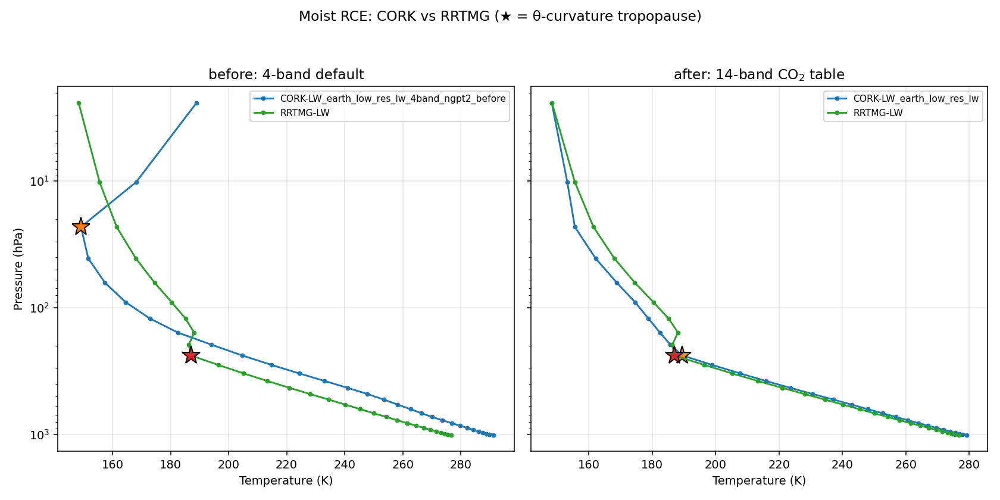
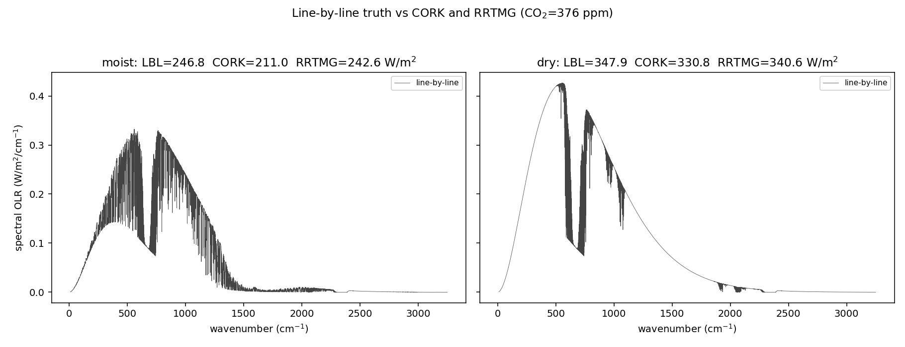
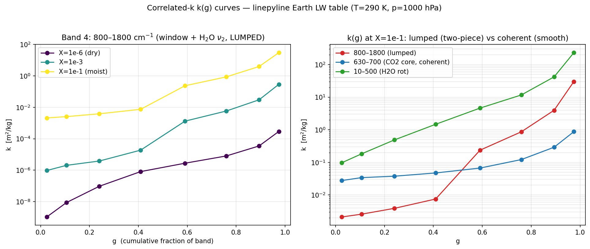
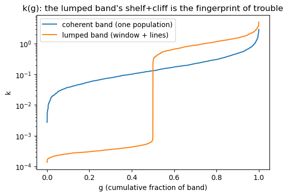
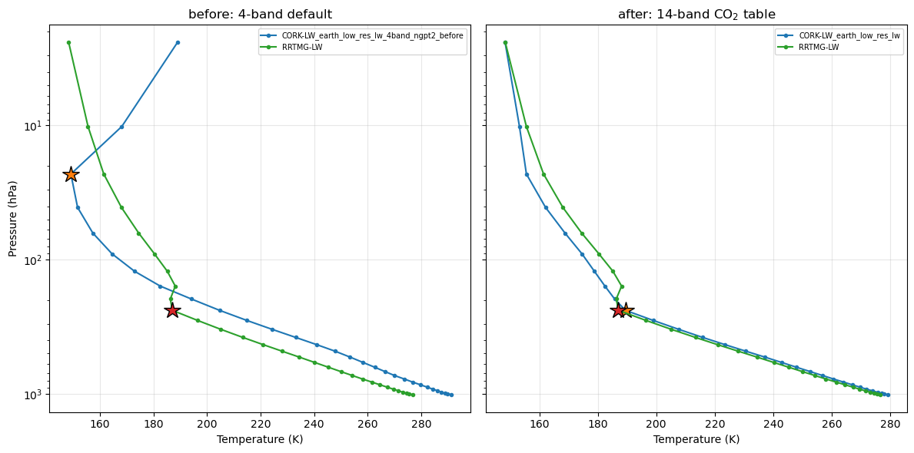

What it takes to build a longwave scheme that rivals RRTMG
radiation
cork
correlated-k
A cork correlated-k table ran 12 K too warm. Chasing down why — and the dead-ends along the way — turned into a lesson in how correlated-k really works, and how it fails.
Author
Joy Monteiro
Published
June 5, 2026
1. The symptom
Here is a moist column relaxed to radiative–convective equilibrium (RCE) two ways: once with RRTMG-LW, the workhorse longwave scheme, and once with climt’s cork longwave (CorkLongwaveRadiation) using its first-cut 4-band Earth table. Same shortwave, same convection, same surface. Only the longwave differs.

Moist RCE temperature profiles, before vs after. ★ marks the tropopause located by the θ-curvature criterion of §7.
Look at the left panel. The cork column (blue) is far warmer than RRTMG (green) through the whole troposphere. The numbers are stark:
quantity (moist RCE)
4-band default
vs RRTMG
surface temperature
+11.9 K warmer
runaway
surface humidity
6.48 g/kg
vs 2.02 (≈3× too moist)
tropopause (θ-curvature)
≈23 hPa
vs 238 hPa — nowhere close
A +12 K surface bias with a humidity runaway is not a tuning problem; it is a the scheme is wrong problem. The detective question for the rest of this post: is it the line data, or the scheme?
2. A primer: the k-distribution, and the one assumption it rests on
NoteHow correlated-k works (expand if it’s new)
A longwave band spans many wavenumbers ν, and the gas absorption coefficient k(ν) varies wildly across it — by orders of magnitude between a transparent gap and the centre of an absorption line. The band-averaged transmission through a column of absorber amount \(u\) is
You cannot replace \(k(\nu)\) by its mean: the average of an exponential is not the exponential of the average. Line-by-line integration does it honestly but is far too expensive for a climate model.
The k-distribution trick: that integral only depends on the distribution of k-values in the band, not on where in ν they sit. So sort k(ν) from weakest to strongest. You get a smooth, monotonic curve \(k(g)\), where \(g \in [0,1]\) is the cumulative fraction of the band. A handful of quadrature points on \(k(g)\) — the g-points — then integrate the transmission cheaply. Low-g points are the transparent gaps that radiate to space; high-g points are the saturated line cores.
The “correlated” part is the load-bearing assumption. Stacking many layers requires that the rank ordering of k(ν) is preserved with height — that a given g-point corresponds to the same wavenumbers at every level. That holds when one absorber, scaling smoothly with pressure and temperature, dominates the band.
Keep that last assumption in mind. It is exactly what will break.
3. Isolating the culprit
The clean way to split “line data” from “scheme” is to compare against line-by-line truth — the absorption computed wavenumber by wavenumber, with no k-distribution approximation at all.

Line-by-line spectral OLR (grey), with the band-integrated totals from line-by-line, cork, and RRTMG.
The line-by-line total matches RRTMG. The cork scheme, fed the same line data, traps more — its outgoing longwave is too low. The line data is fine. The correlated-k scheme is the culprit. Now we have to find out where inside it the error lives.
4. The dead-ends (this is the useful part)
The obvious instinct is that the scheme is under-resolved. It isn’t, and watching the obvious fixes fail is how you learn what the problem actually is.
WarningWhat did not work
More g-points (8 → 16 → 32). The over-trapping barely moves. If this were a quadrature-resolution problem, more g-points would fix it. They don’t.
Finer vertical resolution. Same story — no help.
Boosting the line wings. A hack; rejected.
When throwing resolution at an error doesn’t move it, you are not fighting a numerical problem. You are fighting a structural assumption — here, the correlated-k spectral-correlation floor. That reframing is what points at the two real levers below.
5. Root cause #1 — the water-vapour continuum (the dominant moist lever)
The H₂O continuum (Mlawer et al. 2012) is a broad, slowly varying absorption that rides underneath the lines. The first-cut table folded it into the line-sorted k-distribution and interpolated it linearly across log-spaced humidity nodes. Because the continuum scales roughly with the square of water-vapour amount, linear interpolation across log-spaced nodes systematically over-shoots — and it over-traps by about 17 W/m² in the moist column.
TipThe fix (engineering)
Decouple it. Build the k-distribution from the lines only, and carry the continuum as a separate, band-grey term interpolated in log-X. This is precisely the separation RRTMG uses — its tauself / taufor self- and foreign-continuum paths (Mlawer et al. 1997). Same physics, split into the two pieces that each interpolate cleanly.
6. Root cause #2 — band structure (the lumped window)
The second lever is the one the primer warned about. The 4-band table lumps the entire 800–1800 cm⁻¹ region into a single band — but that region contains two spectrally distinct populations: the transparent 8–12 µm window, and the opaque H₂O ν₂ band. Sort them together and you get the tell-tale shape:

k(g) for the lumped window band (left): dry it is low and smooth, but moist it grows a low-g shelf (the window) and a high-g cliff (the H₂O lines). Right: the lumped two-piece curve next to spectrally coherent bands.
That shelf-and-cliff is the fingerprint of two populations in one band. One shared Planck weight and one shared set of g-points cannot represent both at once, so the transparent half can’t open up and gets over-absorbed. Notice the error is invisible when dry (both halves are transparent) and switches on with water vapour — exactly the dry/moist signature we measured.
The fix is surgical: a 14-band partition that isolates the window and refines the far-IR and ν₂ regions, so each band is again a single coherent population.
7. The payoff — and which diagnostic to trust
Put both fixes together — decoupled continuum + 14-band structure — and re-run the same moist RCE (the right panel of the first figure):
quantity (moist RCE vs RRTMG)
4-band
14-band
surface temperature
+11.9 K
+2.0 K
dry surface temperature
—
+0.8 K
surface humidity
6.48 vs 2.02 g/kg
2.38 vs 2.02
tropopause (θ-curvature)
23 hPa vs RRTMG 238
238 hPa — co-located
The warm runaway is gone, the humidity is sane, and the cork tropopause now sits right on top of RRTMG’s.
TipA diagnostic that survives a broken climate
Locating the tropopause turned out to need its own work. The simple “potential temperature exceeds the surface value by 10 K” marker mislocated the runaway column badly — it reported a tropopause near 583 hPa, deep in the mid-troposphere, which is physically nonsense. This post instead uses a θ-curvature criterion: the tropopause is the kink where potential temperature stops being convectively well-mixed and shoots up into the stratosphere — the level of maximum |d²θ/d(ln p)²|. It locates the well-behaved 14-band column at 238 hPa (matching RRTMG) and correctly reports the broken 4-band column as pathological — convection driven absurdly deep, tropopause near 23 hPa. You can read it in scripts/experiments/tropopause.py.
NoteWhich error metric should you believe?
There’s a trap here worth internalising. A fixed-profile single-column comparison reads about +11 W/m² of over-trapping for both the prototype and the shipped 14-band table — it looks like the band work barely helped. Yet the self-adjusting RCE column converges to only ~2 K. The fixed-profile metric over-states the error a column that can adjust its own humidity and lapse rate actually incurs. Always match the diagnostic to the question you’re asking.
8. Two more things this bought us
Fast vs faithful. Making the table faithful — 14 bands, 8 g-points, a runtime CO₂ axis — made the Python optical-depth and Planck assembly the bottleneck, not the physics. Compiling the two hot loops with Numba’s @njit(parallel=True) (on top of the already-compiled transport kernel) recovered all of it, bit-for-bit:
Longwave throughput. The faithful 14-band cork scheme is faster than RRTMG.
The faithful scheme ends up faster than RRTMG (here 56.6 vs 65.3 µs/column; your absolute numbers will vary with machine and column count). The lesson is that accuracy and speed were never the trade-off — the cost was un-compiled assembly loops.
The free knob. The same table is CO₂-adjustable from 10 to 10 000 ppm through a single runtime axis, interpolated geometrically (log-k against log-X_CO₂). Interpolating CO₂ between table nodes turns out to be fidelity-free: the off-node bias against line-by-line equals the on-node bias. (A leave-one-out test puts log-k interpolation at 5.5 % vs 30.9 % for linear-k.) The probe lives in scripts/experiments/eval_co2_interp_accuracy.py.
Line-only k-distribution + a decoupled band-grey H₂O continuum, log-X interpolated.
A runtime CO₂ axis (10 log nodes, 10–10 000 ppm).
Quadrilinear interpolation: T (linear), log p (linear), log X_H₂O (linear-k), log X_CO₂ (log-k).
The cork optics follow the analytic non-grey framework of Parmentier and Guillot (2014); the table ships as earth_low_res_lw, with the original 4-band table preserved as earth_low_res_lw_4band_ngpt2_before for the before/after comparison above.
Try it yourself
Every figure and number above is reproduced by the companion notebook, which loads the same regenerated artifacts and re-runs the analysis. Run it in the climt environment, or read it through here:
Try it yourself — the cork longwave discovery
This notebook reproduces every figure and headline number in the companion post, straight from the regenerated artifacts in _artifacts/. Run it top to bottom in the climt conda environment. Each section mirrors a beat of the post: symptom → k-distribution → culprit → dead-ends → fix → payoff.
import os, sysimport numpy as npimport matplotlib.pyplot as pltfrom IPython.display import Image, displayREPO = os.path.abspath(os.path.join('..', '..', '..'))sys.path.insert(0, os.path.join(REPO, 'scripts', 'experiments'))from tropopause import find_tropopauseARTIF ='_artifacts'def load_rce(name):"""Final-state columns from an rce_moist --save .npz: {label: {field: array}}.""" d = np.load(os.path.join(ARTIF, name)) cols =sorted({k.split('__')[0] for k in d.files})return {c: {k.split('__')[1]: d[k] for k in d.files if k.startswith(c +'__')}for c in cols}try:from climt import RRTMGLongwave # noqa: F401 RRTMG_AVAILABLE =TrueexceptExceptionas exc: # pragma: no cover - Pyodide has no Fortran RRTMG RRTMG_AVAILABLE =Falseprint('RRTMG unavailable (expected under Pyodide):', exc)print('RRTMG_AVAILABLE =', RRTMG_AVAILABLE)
RRTMG_AVAILABLE = True
1. The symptom
The shipped-before 4-band Earth-LW table, run to moist radiative-convective equilibrium against RRTMG, runs away: a much warmer surface, runaway humidity, and a tropopause nowhere near RRTMG’s.
before = load_rce('rce_moist_before.npz')rr =next(l for l in before if l.startswith('RRTMG'))cork =next(l for l in before if l.startswith('CORK'))dT =float(before[cork]['T_sfc']) -float(before[rr]['T_sfc'])tp_cork = find_tropopause(before[cork]['T'], before[cork]['p_hpa'])['p_curvature']tp_rr = find_tropopause(before[rr]['T'], before[rr]['p_hpa'])['p_curvature']print(f'surface warming CORK - RRTMG : {dT:+.2f} K')print(f'q_sfc CORK {float(before[cork]["q"][0])*1e3:.2f} g/kg vs RRTMG {float(before[rr]["q"][0])*1e3:.2f} g/kg')print(f'tropopause (theta-curvature) CORK {tp_cork:.0f} hPa vs RRTMG {tp_rr:.0f} hPa')# Self-check: the 4-band default really does run away.assert dT >8.0, dTassert tp_cork <100.0, tp_cork # convection driven absurdly deep vs RRTMG
surface warming CORK - RRTMG : +11.91 K
q_sfc CORK 6.48 g/kg vs RRTMG 2.02 g/kg
tropopause (theta-curvature) CORK 23 hPa vs RRTMG 238 hPa
2. The k-distribution, and how it fails
A correlated-k band replaces the messy absorption spectrum with its sorted values — a smooth k(g). That is exact for one band of one population. It breaks when a band lumps two populations (a transparent window + opaque lines): the sorted curve grows a low-g shelf and a high-g cliff, and one shared set of g-points / Planck weight can’t represent both. The regenerated figure shows exactly that for the 800–1800 cm⁻¹ window band.
display(Image(os.path.join(ARTIF, 'kg_window_band.png')))# Pure-Python toy (runs live, even under Pyodide): a k-distribution is just the# SORTED absorption coefficients of a band. Build a 'coherent' band (one# population) and a 'lumped' band (transparent window + opaque lines).rng = np.random.default_rng(0)g = np.linspace(0, 1, 2000)coherent = np.sort(rng.lognormal(-2.0, 1.0, 2000))lumped = np.sort(np.concatenate([rng.lognormal(-8.0, 0.3, 1000), # window: tiny k rng.lognormal( 0.0, 0.5, 1000)])) # lines: large kplt.figure(figsize=(6, 4))plt.semilogy(g, coherent, label='coherent band (one population)')plt.semilogy(g, lumped, label='lumped band (window + lines)')plt.xlabel('g (cumulative fraction of band)'); plt.ylabel('k')plt.title('k(g): the lumped band\'s shelf+cliff is the fingerprint of trouble')plt.legend(); plt.show()

3. Isolating the culprit
Is the warm bias bad line data, or the scheme? Line-by-line truth (linepyline at the CORK diffusivity angle) matches RRTMG; CORK over-traps. So it’s the correlated-k scheme, not the physics input.
4. The dead-ends (and why resolution doesn’t help)
The tempting fixes don’t work, and that’s the lesson:
More g-points (8 → 16 → 32): the over-trapping barely moves. It is not a quadrature-resolution problem.
Finer vertical resolution: same — no help.
Wing-boost hacks: rejected.
When adding resolution doesn’t move the error, you are fighting a structural assumption (the correlated-k spectral-correlation floor), not a numerical one. The real levers turn out to be the H₂O continuum (decouple it) and the band structure (split the lumped window band).
5. The fix, and the payoff
The 14-band table with a decoupled, log-X-interpolated H₂O continuum co-locates CORK with RRTMG and tames the surface warming from ~+12 K to ~+2 K.
after = load_rce('rce_moist_after.npz')fig, axes = plt.subplots(1, 2, figsize=(12, 6), sharey=True)for ax, cols, title in ((axes[0], before, 'before: 4-band default'), (axes[1], after, 'after: 14-band CO$_2$ table')):for label, s in cols.items(): ax.plot(s['T'], s['p_hpa'], '-o', ms=3, label=label) tp = find_tropopause(s['T'], s['p_hpa'])['p_curvature'] ax.plot(np.interp(tp, s['p_hpa'][::-1], s['T'][::-1]), tp, '*', ms=16, mec='k') ax.set_yscale('log'); ax.grid(alpha=0.3) ax.set_title(title); ax.set_xlabel('Temperature (K)'); ax.legend(fontsize=7)axes[0].invert_yaxis() # invert ONCE: the panels share the y-axisaxes[0].set_ylabel('Pressure (hPa)')plt.tight_layout(); plt.show()rr2 =next(l for l in after if l.startswith('RRTMG'))pf2 =next(l for l in after if l.startswith('CORK'))dT_after =float(after[pf2]['T_sfc']) -float(after[rr2]['T_sfc'])tp_pf2 = find_tropopause(after[pf2]['T'], after[pf2]['p_hpa'])['p_curvature']tp_rr2 = find_tropopause(after[rr2]['T'], after[rr2]['p_hpa'])['p_curvature']print(f'surface warming CORK-RRTMG: before {dT:+.1f} K -> after {dT_after:+.1f} K')print(f'after tropopause CORK {tp_pf2:.0f} hPa vs RRTMG {tp_rr2:.0f} hPa (co-located)')assert dT_after <3.0, dT_after

surface warming CORK-RRTMG: before +11.9 K -> after +2.0 K
after tropopause CORK 238 hPa vs RRTMG 238 hPa (co-located)
Which diagnostic do you trust?
A subtlety worth carrying away: a fixed-profile single-column LBL−CORK comparison reads about +11 W/m² for both the prototype and the shipped table — yet the self-adjusting RCE column above converges to only ~2 K. The fixed-profile metric over-states the error a column that can adjust its own humidity and lapse rate actually incurs. Trust the diagnostic that matches the question you’re asking.
6. Two more things this bought us
Fast vs faithful. Making the table faithful made the Python optical-depth / Planck assembly the bottleneck. Compiling the two hot loops with @njit(parallel=True) made the faithful 14-band scheme faster than RRTMG, bit-for-bit. The free knob. The same table is CO₂-adjustable 10–10000 ppm via one runtime axis, log-k interpolated — interpolating between nodes is fidelity-free (see scripts/experiments/eval_co2_interp_accuracy.py).
t = np.load(os.path.join(ARTIF, 'throughput.npz'))rr_us, cork_us =float(t['rrtmg_us_per_col']), float(t['cork_us_per_col'])print(f'throughput @ NCOL={int(t["ncol"])}: 'f'RRTMG {rr_us:.1f} us/col CORK {cork_us:.1f} us/col 'f'(CORK/RRTMG = {cork_us/rr_us:.2f}x)')# The faithful 14-band CORK scheme is faster than RRTMG.assert cork_us < rr_us, (cork_us, rr_us)
For a future in-browser (JupyterLite) port, this notebook already separates cleanly:
Pure-Python-live (run under Pyodide as-is): the setup imports, the k(g) toy in §2, and the analysis/plotting of the pre-baked arrays.
Needs pre-baked _artifacts/*.npz (their producers — RRTMG Fortran and the linepyline line-by-line code — don’t run under Pyodide): the symptom (§1), the line-by-line overlay (§3), the before/after RCE (§5), and the throughput scalars (§6). The live RRTMGLongwave import is guarded by RRTMG_AVAILABLE so the notebook degrades gracefully.
That boundary is the concrete hand-off to the website spec’s deferred live-cells follow-up.
Mlawer, E. J., V. H. Payne, J.-L. Moncet, J. S. Delamere, M. J. Alvarado, and D. C. Tobin. 2012. “Development and Recent Evaluation of the MT_CKD Model of Continuum Absorption.”Philosophical Transactions of the Royal Society A 370: 2520–56. https://doi.org/10.1098/rsta.2011.0295.
Mlawer, E. J., S. J. Taubman, P. D. Brown, M. J. Iacono, and S. A. Clough. 1997. “Radiative Transfer for Inhomogeneous Atmospheres: RRTM, a Validated Correlated-k Model for the Longwave.”Journal of Geophysical Research 102 (D14): 16663–82. https://doi.org/10.1029/97JD00237.
Parmentier, V., and T. Guillot. 2014. “A Non-Grey Analytical Model for Irradiated Atmospheres.”Astronomy & Astrophysics 562: A133. https://doi.org/10.1051/0004-6361/201322342.
Source Code
---title: "What it takes to build a longwave scheme that rivals RRTMG"description: "A cork correlated-k table ran 12 K too warm. Chasing down why — and the dead-ends along the way — turned into a lesson in how correlated-k really works, and how it fails."date: 2026-06-05author: "Joy Monteiro"bibliography: ../../../references.bibcategories: [radiation, cork, correlated-k]toc: true---## 1. The symptomHere is a moist column relaxed to radiative–convective equilibrium (RCE) twoways: once with RRTMG-LW, the workhorse longwave scheme, and once with climt'scork longwave (`CorkLongwaveRadiation`) using its first-cut **4-band**Earth table. Same shortwave, same convection, same surface. Only the longwavediffers.Look at the left panel. The cork column (blue) is far warmer than RRTMG(green) through the whole troposphere. The numbers are stark:| quantity (moist RCE) | 4-band default | vs RRTMG ||---|---|---|| surface temperature | **+11.9 K warmer** | runaway || surface humidity | 6.48 g/kg | vs 2.02 (≈3× too moist) || tropopause (θ-curvature) | ≈23 hPa | vs 238 hPa — nowhere close |A +12 K surface bias with a humidity runaway is not a tuning problem; it is a*the scheme is wrong* problem. The detective question for the rest of this post:**is it the line data, or the scheme?**## 2. A primer: the k-distribution, and the one assumption it rests on::: {.callout-note collapse="true"}## How correlated-k works (expand if it's new)A longwave band spans many wavenumbers ν, and the gas absorption coefficientk(ν) varies wildly across it — by orders of magnitude between a transparent gapand the centre of an absorption line. The band-averaged transmission through acolumn of absorber amount $u$ is$$\mathcal{T}(u) = \big\langle e^{-k(\nu)\,u} \big\rangle_\nu .$$You **cannot** replace $k(\nu)$ by its mean: the average of an exponential is notthe exponential of the average. Line-by-line integration does it honestly but isfar too expensive for a climate model.The **k-distribution** trick: that integral only depends on the *distribution* ofk-values in the band, not on where in ν they sit. So sort k(ν) from weakest tostrongest. You get a smooth, monotonic curve $k(g)$, where $g \in [0,1]$ is thecumulative fraction of the band. A handful of quadrature points on $k(g)$ — the**g-points** — then integrate the transmission cheaply. Low-g points are thetransparent gaps that radiate to space; high-g points are the saturated linecores.The **"correlated"** part is the load-bearing assumption. Stacking many layersrequires that the *rank ordering* of k(ν) is preserved with height — that a giveng-point corresponds to the same wavenumbers at every level. That holds when oneabsorber, scaling smoothly with pressure and temperature, dominates the band.:::Keep that last assumption in mind. It is exactly what will break.## 3. Isolating the culpritThe clean way to split "line data" from "scheme" is to compare against**line-by-line** truth — the absorption computed wavenumber by wavenumber, with nok-distribution approximation at all.The line-by-line total matches RRTMG. The cork scheme, fed the *same*line data, traps more — its outgoing longwave is too low. The line data is fine.**The correlated-k scheme is the culprit.** Now we have to find out where insideit the error lives.## 4. The dead-ends (this is the useful part)The obvious instinct is that the scheme is under-resolved. It isn't, and watchingthe obvious fixes fail is how you learn what the problem actually is.::: {.callout-warning}## What did *not* work- **More g-points (8 → 16 → 32).** The over-trapping barely moves. If this were a quadrature-resolution problem, more g-points would fix it. They don't.- **Finer vertical resolution.** Same story — no help.- **Boosting the line wings.** A hack; rejected.When throwing resolution at an error doesn't move it, you are not fighting anumerical problem. You are fighting a **structural** assumption — here, thecorrelated-k spectral-correlation floor. That reframing is what points at the tworeal levers below.:::## 5. Root cause #1 — the water-vapour continuum (the dominant moist lever)The H₂O continuum [@mlawer2012] is a broad, slowly varying absorption that ridesunderneath the lines. The first-cut table folded it *into* the line-sortedk-distribution and interpolated it linearly across log-spaced humidity nodes.Because the continuum scales roughly with the square of water-vapour amount,linear interpolation across log-spaced nodes systematically over-shoots — and itover-traps by about **17 W/m²** in the moist column.::: {.callout-tip}## The fix (engineering)Decouple it. Build the k-distribution from the **lines only**, and carry thecontinuum as a separate, band-grey term interpolated in log-X. This is preciselythe separation RRTMG uses — its `tauself` / `taufor` self- and foreign-continuumpaths [@mlawer1997]. Same physics, split into the two pieces that eachinterpolate cleanly.:::## 6. Root cause #2 — band structure (the lumped window)The second lever is the one the primer warned about. The 4-band table lumps theentire 800–1800 cm⁻¹ region into a single band — but that region contains **twospectrally distinct populations**: the transparent 8–12 µm window, and the opaqueH₂O ν₂ band. Sort them together and you get the tell-tale shape:That shelf-and-cliff is the fingerprint of two populations in one band. One sharedPlanck weight and one shared set of g-points cannot represent both at once, so thetransparent half can't open up and gets over-absorbed. Notice the error is**invisible when dry** (both halves are transparent) and switches on with watervapour — exactly the dry/moist signature we measured.The fix is surgical: a **14-band** partition that isolates the window and refinesthe far-IR and ν₂ regions, so each band is again a single coherent population.## 7. The payoff — and which diagnostic to trustPut both fixes together — decoupled continuum + 14-band structure — and re-run thesame moist RCE (the right panel of the first figure):| quantity (moist RCE vs RRTMG) | 4-band | 14-band ||---|---|---|| surface temperature | +11.9 K | **+2.0 K** || dry surface temperature | — | +0.8 K || surface humidity | 6.48 vs 2.02 g/kg | 2.38 vs 2.02 || tropopause (θ-curvature) | 23 hPa vs RRTMG 238 | **238 hPa — co-located** |The warm runaway is gone, the humidity is sane, and the cork tropopausenow sits right on top of RRTMG's.::: {.callout-tip}## A diagnostic that survives a broken climateLocating the tropopause turned out to need its own work. The simple "potentialtemperature exceeds the surface value by 10 K" marker mislocated the runawaycolumn badly — it reported a tropopause near **583 hPa**, deep in themid-troposphere, which is physically nonsense. This post instead uses a**θ-curvature** criterion: the tropopause is the kink where potential temperaturestops being convectively well-mixed and shoots up into the stratosphere — thelevel of maximum |d²θ/d(ln p)²|. It locates the well-behaved 14-band column at238 hPa (matching RRTMG) and correctly reports the broken 4-band column aspathological — convection driven absurdly deep, tropopause near 23 hPa. You canread it in `scripts/experiments/tropopause.py`.:::::: {.callout-note}## Which error metric should you believe?There's a trap here worth internalising. A **fixed-profile** single-columncomparison reads about +11 W/m² of over-trapping for *both* the prototype and theshipped 14-band table — it looks like the band work barely helped. Yet theself-adjusting RCE column converges to only ~2 K. The fixed-profile metric**over-states** the error a column that can adjust its own humidity and lapse rateactually incurs. Always match the diagnostic to the question you're asking.:::## 8. Two more things this bought us**Fast vs faithful.** Making the table faithful — 14 bands, 8 g-points, a runtimeCO₂ axis — made the *Python* optical-depth and Planck assembly the bottleneck, notthe physics. Compiling the two hot loops with Numba's `@njit(parallel=True)` (ontop of the already-compiled transport kernel) recovered all of it, bit-for-bit:The faithful scheme ends up **faster than RRTMG** (here 56.6 vs 65.3 µs/column;your absolute numbers will vary with machine and column count). The lesson is thataccuracy and speed were never the trade-off — the cost was un-compiled assemblyloops.**The free knob.** The same table is CO₂-adjustable from 10 to 10 000 ppm througha single runtime axis, interpolated geometrically (log-k against log-X_CO₂).Interpolating CO₂ *between* table nodes turns out to be fidelity-free: theoff-node bias against line-by-line equals the on-node bias. (A leave-one-out testputs log-k interpolation at 5.5 % vs 30.9 % for linear-k.) The probe lives in`scripts/experiments/eval_co2_interp_accuracy.py`.## 9. The answer keyThe shipped recipe, for reference:- **14 bands**, edges (cm⁻¹): `10, 250, 350, 500, 630, 700, 800, 980, 1080, 1180, 1250, 1400, 1600, 1800, 3250`; **8 g-points** per band.- **Line-only** k-distribution + a **decoupled band-grey H₂O continuum**, log-X interpolated.- A runtime **CO₂ axis** (10 log nodes, 10–10 000 ppm).- Quadrilinear interpolation: T (linear), log p (linear), log X_H₂O (linear-k), log X_CO₂ (**log-k**).The cork optics follow the analytic non-grey framework of@parmentier2014; the table ships as `earth_low_res_lw`, with the original 4-bandtable preserved as `earth_low_res_lw_4band_ngpt2_before` for the before/aftercomparison above.## Try it yourselfEvery figure and number above is reproduced by the companion notebook, whichloads the same regenerated artifacts and re-runs the analysis. Run it in the`climt` environment, or read it through here:{{< embed cork_co2_bands.ipynb echo=true >}}